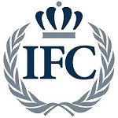

The Interfraternity Council is a self-governing body representing the 27 member fraternities at the University of Georgia. Consisting of two members and the president of each fraternity, the IFC strives to promote excellence in all aspects of fraternity life and academic pursuits. The internal committees of the IFC are responsible for diversity, philanthropy, public relations, recruitment, scholarship, risk management and council-wide programming initiatives. The IFC requires all new members to attend educational seminars covering topics such as hazing, drugs and alcohol, sexual assault prevention, diversity, and character development. The IFC requires its fraternities to achieve a 3.0 chapter grade point average in order to have social privileges.
Community service is major component of fraternity life. Chapters take part in such community service activities as volunteering at the Boys & Girls Club, Tutoring at local schools, and serving as medical volunteers at local clinics. UGA's Interfraternity Council has also been very active with the American Red Cross, hosting blood drives at many fraternity houses. Giving back to the Athens-Clarke County is an important part of our Greek System and if your organization is interested in partnering with us, please contact Community Service Chairs for the Interfraternity Council Jordan Woodard or Gareth Kanter. Each year individual chapters raise thousands of dollars toward respective philanthropies and chapters support a philanthropic events by holding fundraisers annually. Fundraisers range from canned food drives to road races and golf tournaments. Recently, the Greek community united to fully fund and build a Habitat for Humanity House, known as the House the Greeks Built. The Greek community is also a major contributor to ugaMiracle, which among other endeavors sponsors a dance marathon which benefits Children's Healthcare of Atlanta. In 2017, ugaMiracle raised over $1,270,000.
Formerly known as UGA Dance Marathon, UGA Miracle raises money and awareness for Children's Miracle Network Hospitals, specifically Children's Healthcare of Atlanta. For more than two decades, UGA Miracle has raised nearly $5 million that has supported the Comprehensive Inpatient Rehabilitation Unit (CIRU) at Scottish Rite, Egleston, and Hughes Spalding hospitals in the Atlanta area. Click to find out more about UGA Miracle and how to get involved!
| % IFC acheiving 3.0 or higher | 85 |
| % IFC acheiving Dean's List | 14 |
| % IFC Undergrad Males | 19 |